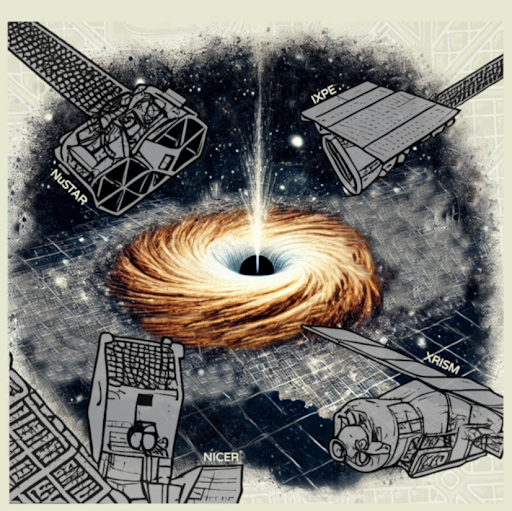

Instituto Argentino de Radioastronomía (IAR-CONICET-CICPBA-UNLP)
Contents: Fundamentals of X-ray astronomy. Radiative processes. X-ray emitters. Instrumentation. State-of-the-art telescopes. Data extraction. Data reduction and analysis software. Calibration. Event files. Image creation. Light curves and variability analysis. Spectral extraction and fitting. Calibration of Chandra data. Image processing across different energy bands. Combining multiple Chandra observations. X-ray light curves, variability analysis, and spectra. Absorption and emission models.
Research opportunities for undergraduate and graduate students
Ultraluminous X-ray sources are among the most extreme objects in the universe. Their main characteristic is that they emit above the Eddington limit, which can be understood as the maximum brightness an object can sustain before the pressure of its own radiation tends to push outward the material it is trying to attract. When a system exceeds this limit, it means that particularly intense and efficient accretion processes are occurring within it.
This project will focus on the reduction, analysis, and physical interpretation of simultaneous observations obtained with NuSTAR and XMM-Newton. The student will work with high-quality observational data and develop tools to understand how this extreme emission is generated, what it tells us about the matter falling onto the compact object, and why these systems challenge our understanding of the limits of physics in astrophysical environments.
When a star interacts with a white dwarf with a very intense magnetic field, the system can emit energy across a large part of the electromagnetic spectrum, from ultraviolet to X-rays. These systems are natural laboratories to study how matter falls onto compact objects and how magnetic fields modify this process.
This project will focus on the analysis of observations obtained with NuSTAR and the Hubble Space Telescope. The student will learn to reduce and analyze real astronomical data, while becoming familiar with accretion physics, that is, the process by which a compact object captures matter from its surroundings, releasing large amounts of energy. It is an ideal project to start both in observational data work and in the physical interpretation of compact systems.
Ultracompact low-mass binaries are systems with orbital periods of less than 80 minutes, generally formed by a white dwarf orbiting a neutron star. Because the two objects are extremely close to each other, these systems are especially useful for studying the evolution of compact binaries, matter accretion, and high-energy emission. Furthermore, they are of great interest because they constitute important sources for LISA (Laser Interferometer Space Antenna), a future space mission designed to detect gravitational waves, that is, small perturbations in space-time produced by the movement of very massive and compact objects. Two projects are proposed within this line:
In this project, infrared magnitudes will be obtained from Spitzer observations, which will be combined with other available measurements to construct the spectral energy distribution of the system. In simple terms, this allows studying how the energy emitted by the source is distributed across different wavelengths. From this analysis and its modeling, the possible presence of a jet, that is, a collimated ejection of matter and energy that can occur in accreting systems, will be investigated. The student will work with data in different bands of the spectrum and learn to connect observations with physical models.
This project will focus on the reduction and analysis of two X-ray observations with the objective of characterizing the system's emission in detail. The student will gain experience in spectral and temporal analysis, fundamental tools to study how the emission changes with energy and time. This will allow investigating the geometry of the system, the properties of the accreting material, and the mechanisms responsible for the observed radiation. It is a particularly formative project for those who want to start in high-energy data analysis and the study of compact objects.
X-ray binaries are systems where a black hole or neutron star accretes matter from a companion star, resulting in ideal laboratories to understand astrophysics in extreme gravity regimes. As material is drawn toward the compact object, it heats up emitting X-rays that, far from being stable, present complex fluctuations over wide frequency ranges. Analyzing these variations in time and energy (spectral-timing analysis), and in particular the Quasi-Periodic Oscillations (QPOs) that act as a metronome for the system, allows mapping the geometry and physics of the accretion flow in the innermost regions of space-time.
For this Bachelor's Thesis, it is possible to choose between two approaches depending on the student's profile:
Processing and analysis of real data from modern satellite missions (such as NICER, NuSTAR, or HXMT). Based on learning advanced Fourier analysis techniques, detailed analyses of datasets from these missions will be performed to understand the physical phenomena manifested from the spectral-timing framework.
Computational modeling oriented to the physical interpretation of these oscillations. Time-dependent radiative transfer theoretical models (such as thermal Comptonization) will be used to reproduce the spectra and QPOs, constraining parameters associated with the geometry of the accretion flow.

Advanced Spectral-Timing, Polarimetry, and High-Resolution Spectroscopy X-ray School for Latin-America. Intensive X-ray astrophysics programme for students and early career researchers, with hands-on training on XRISM, NICER, IXPE, NuSTAR, machine learning tools and theory.